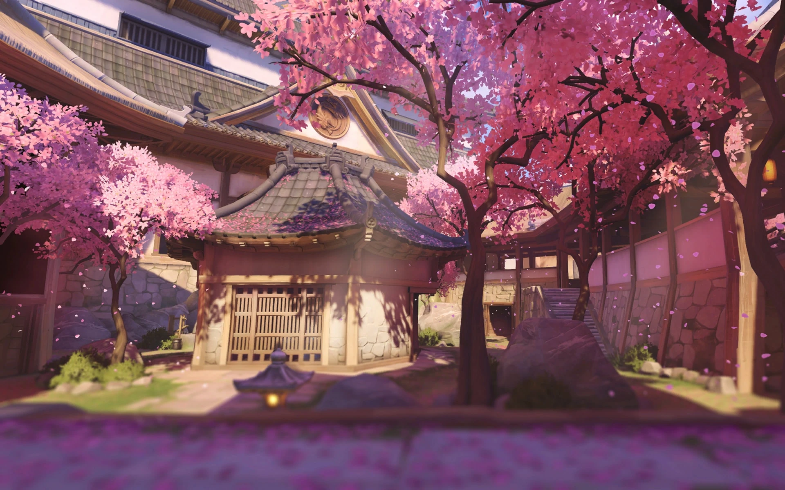
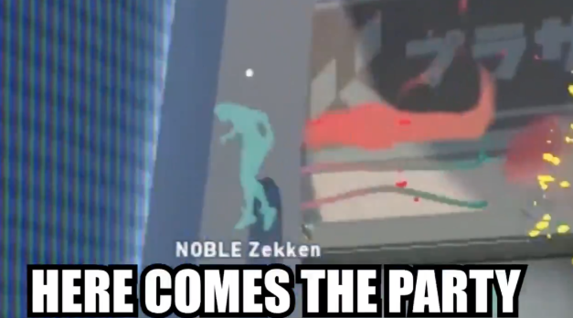
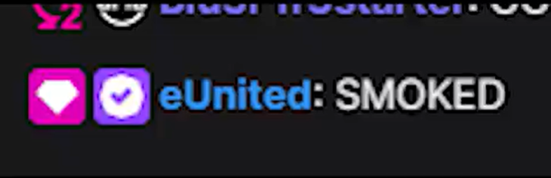
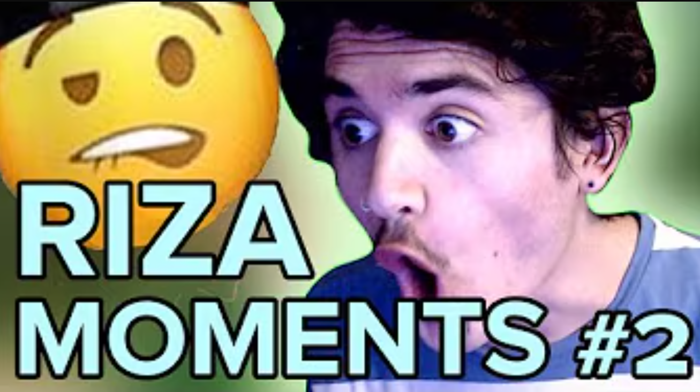
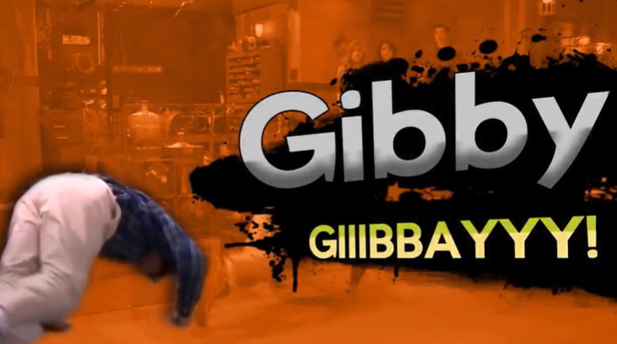

Unlike most, I won't make your fanbase cringe.
Community-first digital strategist specializing in authentic fan engagement for anime and gaming.

Junji Ito Videos
I had the pleasure of working on videos featuring Junji Ito and the community truly resonated with the goal of our content pieces, to display the hilarious juxtaposition of Junji Ito's softspoken, personable nature with his harrowing body horror manga.


Launch & Announcement Highlights
Optimizing franchise news for shareability and algorithmic reach.
JoJo’s Bizarre Adventure: Steel Ball Run
Structured announcement language for clarity and shareability, anticipating quote tweet behavior in the JoJo community.
BLEACH: Thousand-Year Blood War
Balanced nostalgia for legacy fans with clear entry points for new viewers. Copy was high-energy and character-forward.
Zom 100: Bucket List of the Dead
Announcement framing optimized for anticipation and weekly retention, reinforcing viewing cadence and platform availability.
God of High School
Fan culture collaboration post optimized for shareability and reaction communities via fight scene reenactment.
Gaming, Esports & Creative
Community-forward content designed for competitive audiences, blending humor, identity, and timely platform moments.
NYXL
-

What OW Main Says About You Developed a piece to connect with all players for the TikTok/Reels channel. -
 Heartbr2ken
Created a skit about an imaginary, worst-kind-of-hitscan player. Scripted & voiced by me.
Heartbr2ken
Created a skit about an imaginary, worst-kind-of-hitscan player. Scripted & voiced by me.
NobleGG
-

Zekken Jackass Created videos to introduce fans to the personality behind the Phoenix 1 roster. -

eUnited Meme Prepared a viral-style screenshot post celebrating a comeback win.
Creative Projects
-

Riza Moments #2 (YouTube) Favorite longform project balancing creative expression and unedited footage quality. -

Gibby Smash Reveal Smash Bros.-style trailer for Gibby following the All-Star Brawl announcement.
Experience
I've been incredibly lucky to work with such amazing people and companies. This portfolio would not be possible without them, and all experience listed below would never have been experienced at all. Special thanks to Joshua Acuay, Sarah Edge, Matt Fagaly, Rachel Trujillo, Gurshaan Arora, Chloe Wong, Theresa Foessel, Naz Assar, Paul Alcantara, Zachary Patrone and many more for accompanying me on my many years long journey. You all inspire me.
Social Media Contractor
➔ Led social strategy for BLEACH: Thousand-Year Blood War across 10 platforms, driving 100M+ impressions while maintaining a consistent, fandom-native brand voice.
➔ Executed viral campaigns including the Part 3 trailer launch (3.6M+ views, 33M+ impressions, 69% average watch time) by aligning creative, timing, and community momentum.
➔ Crafted top-performing social copy, averaging 10K+ likes per post, balancing humor, clarity, and brand safety across high-volume fan communities.
➔ Collaborated with global brands including Disney, Nintendo, Marvel, and Mojang through licensed properties, ensuring approvals, tone alignment, and clean execution.
➔ Built a Java application to generate and manage UTM-tracked links across campaigns, platforms, objectives, and destinations, improving tracking consistency and reducing workflow time by ~3x.
Social Media Manager
➔ Ran social for NYXL, Subliners, and Andbox VALORANT, shaping a strong community voice across competitive titles and fast-moving news cycles.
➔ Produced TikToks up to 600K views by translating match moments and internet culture into platform-native storytelling.
Social Media Manager
➔ Rebuilt the org’s social presence, driving 400% impression growth and 100% profile visit growth through consistent voice, reactive coverage, and community-first content.
➔ Expanded Noble into new titles and led Discord community engagement, maintaining daily presence and reinforcing trust with players and fans.